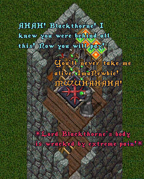
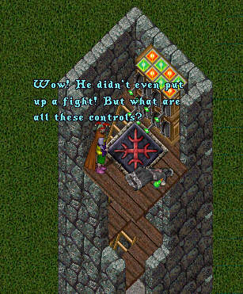
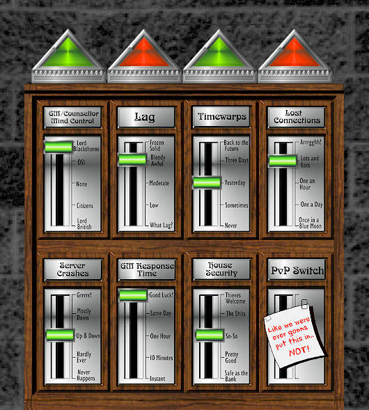
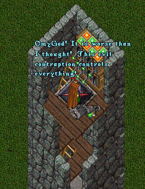
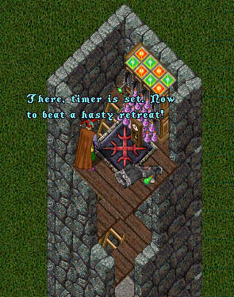
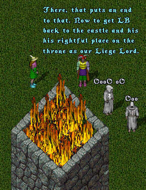
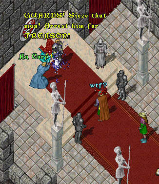
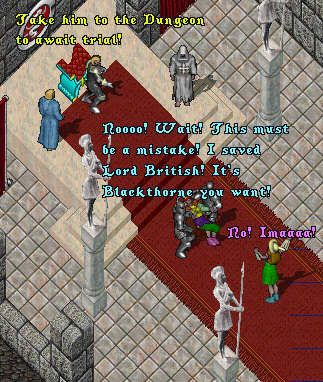

Episode 71: The Conspiracy (Part 4) - In the last episode ImaNewbie, Irma, and LB's ghost find the secret tower supposedly containing the mysterious crystals. As this episode opens ImaNewbie cautiously enters the tower and proceeds up the ladders, unsure of what he will find. Once again, this is a big episode so let it load completely :)


Suprised by Lord Blackthorne's quick exit via a deadly
poison, ImaNewbie turns his attention to a mysterious
machine topped with glowing crystals, discovering much
more than he had bargained for.


ImaNewbie realizes the only way to rid Britannia of
the scourge brought on by this infernal machine is to
destroy it once and for all.


ImaNewbie and Irma with Lord British's and Lord Blackthorne's
ghosts in tow, head for LB's castle in Britain. All the way there
ImaNewbie wonders what great honor Lord British will bestow on
him for returning him to the throne. "Maybe he will give me a
knighthood!", thinks Ima to himself. When they arrive at the
castle, ImaNewbie gets the court healer to resurrect Lord British.

